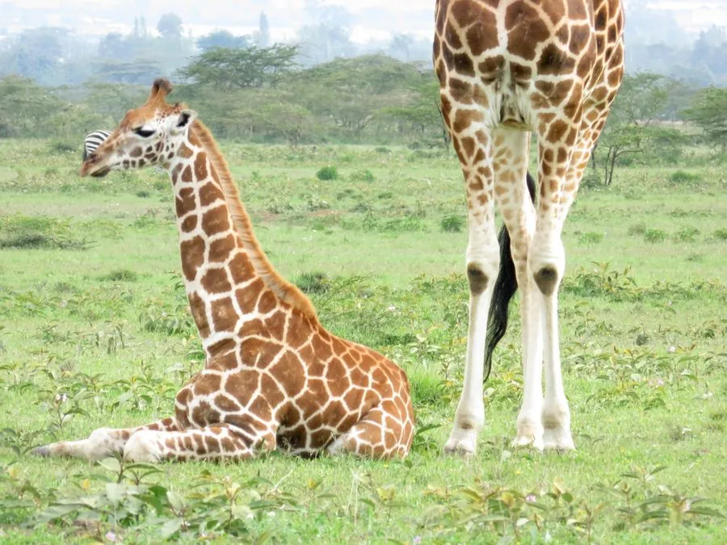

哺乳动物 · 动物界
长颈鹿 Giraffa camelopardalis

世界上最高的陆生动物，凭超长颈部取食高处的树叶，心脏强大、血压极高，生活在非洲的稀树草原。
- 分类
- 门脊索动物门纲哺乳纲目偶蹄目科长颈鹿科属长颈鹿属
- 栖息环境
- 非洲稀树草原与疏林地带，偏好有金合欢树的干旱开阔环境
- 地理分布
- 非洲撒哈拉以南的草原与疏林地区，各地种群数量差异较大
- 保护级别
- IUCN 易危（VU）
物种志
长颈鹿肩高 2.8–3.5 米，加上头部可达 4.5–5.5 米，雄性体重 800–1900 kg，雌性略小。它的颈部虽长，颈椎却只有 7 块，每块可长 25 cm；全身布满褐色网状斑块，斑纹可用于个体识别。头顶有黑色短角，舌头呈蓝紫色，长约 45–50 cm。
长颈鹿栖息于非洲稀树草原和疏林地带，专食金合欢等树木的高处枝叶，舌头能灵巧地卷取带刺的嫩叶。它每天睡眠约 2 小时，多站着打盹，其余时间几乎都在进食；奔跑时速可达 60 km/h。长颈鹿的血压约为人类的两倍，心脏重约 11 kg，颈部的特殊血管结构可在低头饮水时防止脑部充血。它们多结成松散的群体，雄性间以“颈击”争夺交配权。偷猎和栖息地丧失使非洲长颈鹿种群在近几十年减少了约三至四成。
形态与习性
- 食性金合欢等树木的高处枝叶，偶食花果
- 身高肩高 2.8–3.5 m，头顶可达 4.5–5.5 m
- 体重800–1900 kg，雄性大于雌性
- 寿命野外约 20–25 年
- 繁殖妊娠期约 15 个月，每胎 1 仔
- 睡眠每天约 2 小时，多站着打盹
- 血压约为人类的两倍，心脏重约 11 kg
趣味知识
- 长颈鹿的颈椎只有 7 块，与人类相同，但每块可长达 25 cm。
- 蓝紫色的舌头长约 45 cm，能灵巧卷取带刺的金合欢嫩叶。
- 长颈鹿每天只睡约 2 小时，多数时间几乎站着打盹。
- 低头饮水时，颈部特殊的血管结构能防止脑部充血。
生态关系
- 捕食 → 金合欢 长颈鹿取食金合欢枝叶